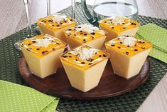

Mousse de maracujá

Ingredientes
- 1 lata de leite condensado
- 1 xícara de suco de maracujá fresco ou congelado
- 1 envelope de gelatina sem sabor (12g)
- 1 xícara de creme de leite fresco
- 1 colher de sopa de açúcar
- 1 colher de sopa de suco de limão
- Folhas de hortelã para decorar (opcional)
Modo de preparo
- Dissolva a gelatina em 1/2 xícara de água quente.
- Misture o leite condensado, o suco de maracujá, o açúcar e o suco de limão.
- Adicione a gelatina dissolvida e misture bem.
- Bata o creme de leite até ficar firme.
- Misture o creme de leite à mistura de maracujá.
- Despeje em tigelas individuais ou em uma forma grande.
- Leve à geladeira por pelo menos 3 horas.
- Decore com folhas de hortelã, se desejar.